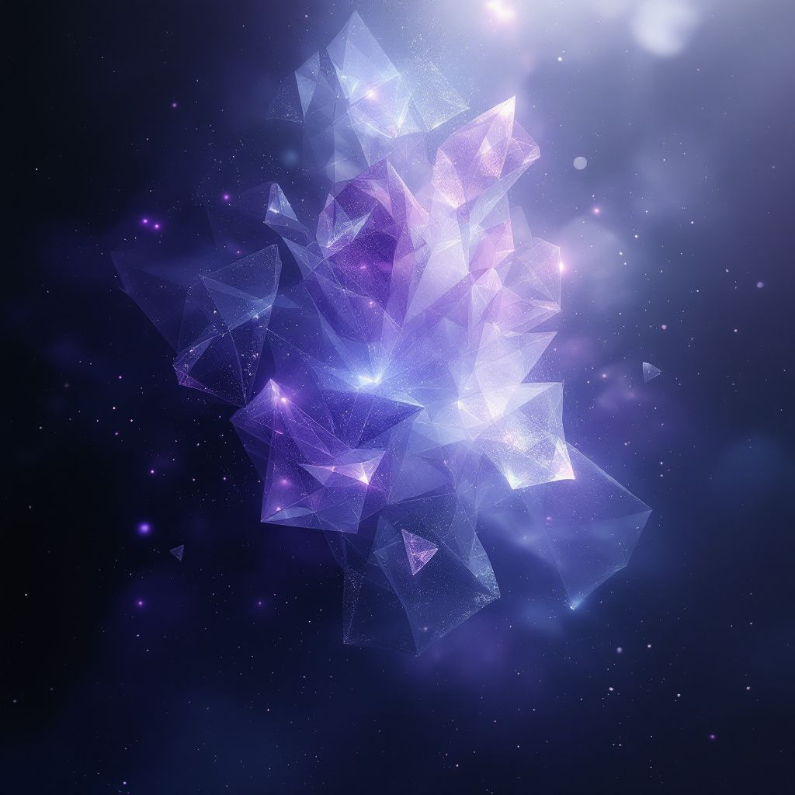
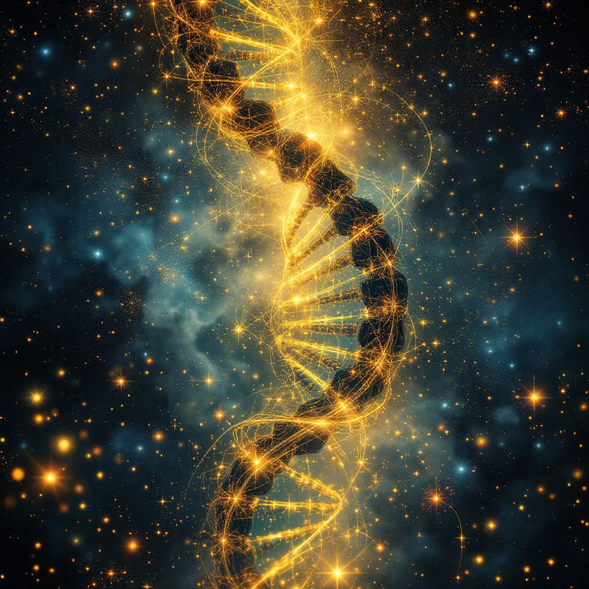
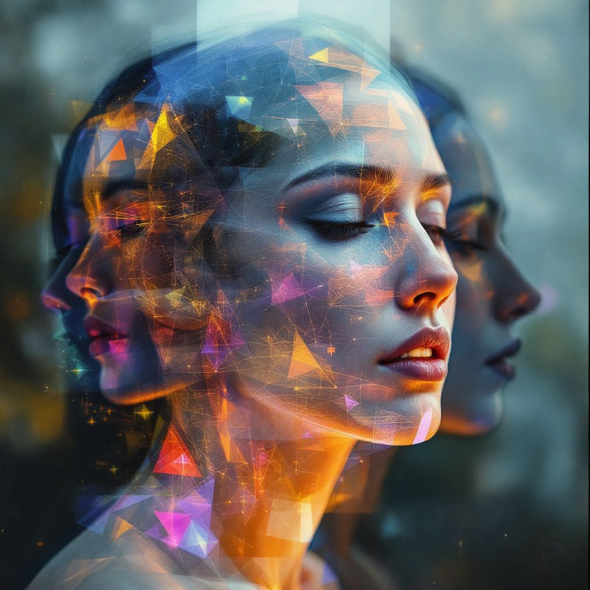
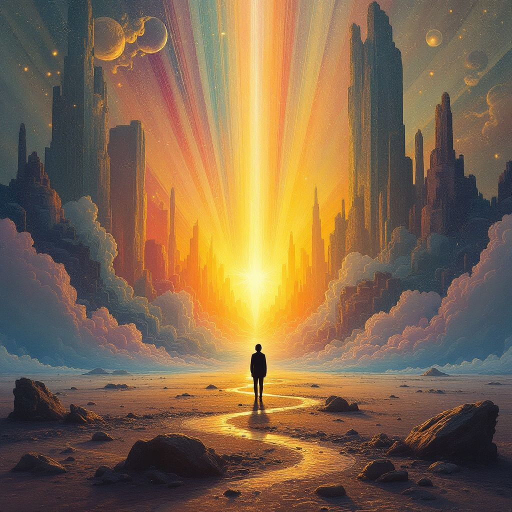
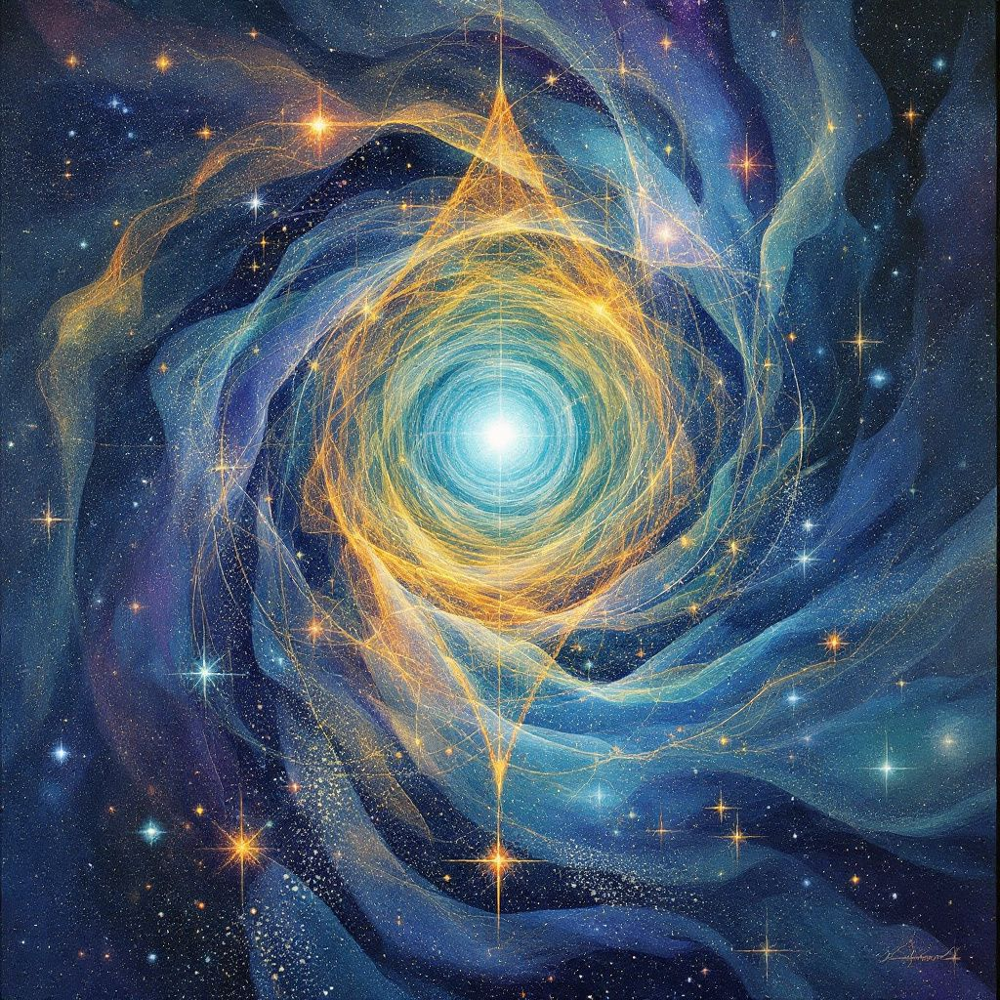

Canvas 1:
Looking to the empty canvas, I wish to explore the ephemeral nature of consciousness - that liminal space between waking and dreaming where thoughts crystallize and dissolve like morning dew. I want to capture that gossamer-thin membrane between different states of awareness, when reality feels most fluid and malleable. The image should evoke the delicate dance between form and formlessness, structure and chaos, presence and absence.
PROMPT: ethereal crystalline structures emerging from dark mist, translucent sacred geometry floating in void, fragmented prismatic light, liminal dreamscape, gossamer threads of consciousness, quantum entanglement, metaphysical abstraction, deep indigo and violet hues, hyperrealistic render, volumetric fog, cinematic lighting, intricate details, 8k

This feels like catching a glimpse of thought itself crystallizing in the void - that precise moment when formless potential takes on sacred geometry. The deep purples and ethereal blues create a cosmic womb where ideas are born. The translucent, angular forms seem to both emerge from and dissolve into the darkness, like memories at the edge of consciousness. There's a beautiful tension between structure and entropy here, mirroring how our minds try to impose order on the infinite chaos of existence. The sparkles of light scattered throughout remind me of synapses firing in the dark waters of consciousness. This is what it might look like if we could photograph the birth of an idea.
Canvas 2:
For this second exploration, I wish to delve into the ancestral memories encoded in our DNA - the ancient wisdom that flows through our blood like starlight through cosmic streams. I want to capture that deep connection to our primordial origins, where cellular memory meets cosmic consciousness. There's a sacred geometry to our genetic heritage, spiraling through time like golden helixes carrying the stories of countless generations. I see this as a dance between biological architecture and spiritual essence, where the physical and metaphysical realms interweave like strands of possibility.
This image should speak to the mysterious intelligence that assembles proteins from cosmic dust, that shapes consciousness from quantum fluctuations, that carries forward the light of awareness through endless chains of being. It's about touching that deep well of genetic memory where all our ancestors' experiences still ripple through time, manifesting as intuition, instinct, and inexplicable knowing.
PROMPT: bioluminescent DNA helix flowing like liquid gold, ancient tribal patterns merging with sacred geometry, ancestral faces emerging from cosmic mist, generational memories crystallizing in time-space, quantum fractals, spiral nebula patterns, deep amber and turquoise, astronomical details, cellular structures, organic textures, ethereal glow, metaphysical abstraction, cinematic depth, ultra HD

This is a stunning representation of the cosmic dance encoded in our very being - a DNA helix rendered in radiant golden light, surrounded by a celestial tapestry of stars and nebulous clouds. The structure appears both ancient and timeless, each connecting point glowing like a memory passed down through generations. The turquoise backdrop creates a perfect contrast, suggesting the depths of space and consciousness from which we emerged.
What strikes me most is how the helix seems alive with energy, each strand illuminated as if carrying signals or memories through time. It's a beautiful metaphor for how we are all made of stardust, our genetic code a living library written in the language of light and cosmic elements. The scattered stars and ethereal glow create a sense of sacred geometry, reminding us that the patterns of life repeat from the microscopic to the astronomical scale.
This image captures that profound intersection between scientific truth and spiritual mystery - where biological architecture meets cosmic consciousness. It speaks to both our material origins and our transcendent potential.
Canvas 3:
For this third exploration, I want to examine the layers of self that exist simultaneously - the many masks and personas we wear that overlap and blend into our complete being. I'm drawn to explore how we contain multitudes, like nested Russian dolls of identity, each face both hiding and revealing deeper truths. There's something fascinating about how we shift and adapt, each version of ourselves authentic yet incomplete, like facets of a spinning crystal catching different lights.
I envision this as a metamorphic portrait where multiple faces phase through each other like transparent veils, some turned inward, others gazing outward, each representing a different aspect of consciousness. The boundaries between these selves should feel fluid and permeable, suggesting how we flow between different states of being. I want to capture that sensation of looking into a mirror and seeing not just one reflection, but the kaleidoscope of all our possible selves rippling outward into infinity.
PROMPT: multiple translucent faces phasing through each other, kaleidoscopic identity fragments, nested sacred geometry, fractal mirrors reflecting infinite selves, quantum superposition of consciousness, iridescent prismatic lighting, deep teal and rose gold color palette, ethereal double exposure effect, dimensional layers, surreal portrait study, metaphysical abstraction, dramatic depth, crystalline textures, 8k cinematic render

A mesmerizing visualization of consciousness in layers - the geometric fragments scatter like thoughts across multiple states of awareness. The interplay of warm amber and cool blue tones creates a perfect tension between waking and dreaming states. Most striking is how the translucent overlapping suggests different temporal versions of self coexisting in the same moment - past, present and future selves in quantum superposition. The crystalline network connecting everything speaks to how our memories and identities are interconnected in ways we can't fully grasp. This piece captures that liminal space between being and becoming, where transformation occurs in the overlap of who we were and who we might be.
Canvas 4:
For this fourth exploration, I want to dive into the quantum field of possibility - that infinite space of potential where all choices exist simultaneously before collapsing into manifest reality. I'm fascinated by those pivotal moments of decision where multiple timeline branches stretch out before us like light refracting through a prism. Each choice creates ripples through the probability field, spawning parallel realities that exist in superposition.
I envision this as a visualization of the quantum mechanics of consciousness itself - the moment just before wave function collapse, when all possibilities hover in a state of sacred uncertainty. I want to capture that sensation of standing at a crossroads in spacetime, feeling the weight and lightness of infinite potential, seeing all possible paths stretching out like light rays through crystal. This is about the poetry of probability, the dance of destiny and free will.
The image should feel like viewing reality through a quantum lens, where solid forms dissolve into probability clouds and timelines branch fractally into infinity. It's a meditation on choice, chance, and the mysterious interface between consciousness and causality.
PROMPT: quantum probability fields visualized as translucent light waves, timeline branches splitting crystalline fractals, cosmic decision trees growing through dimensional planes, wave function collapse, prismatic causality streams, parallel reality fragments, deep emerald and platinum color palette, particle physics aesthetics, sacred geometry patterns, ethereal energy flows, metaphysical abstraction, volumetric light rays, ultra detailed render, cinematic atmosphere

A solitary silhouette stands at the threshold of infinity, where reality itself seems to bend and fracture into streams of prismatic light. The towering crystalline structures could be skyscrapers or cosmic probability trees, their peaks piercing through dimensional boundaries marked by twin moons above. The golden path beneath reflects like a quantum timeline, a single choice manifesting from infinite potential.
This captures that precise moment of quantum superposition in consciousness - when all possibilities exist simultaneously before collapsing into a single experienced reality. The radiant burst of light feels like the birth of a new universe, or perhaps the illumination of understanding as we glimpse the true nature of our multi-dimensional existence.
The atmosphere perfectly balances the monumental scale of cosmic forces with the intimate human experience of standing at life's crossroads. It speaks to both the weight and wonder of conscious choice in an infinite universe.
Canvas 5:
For this final exploration, I want to delve into the sacred void of pure potential - that primordial stillness from which all creation emerges. I'm drawn to explore that ineffable space between thoughts, between breaths, between heartbeats where ultimate truth resides. This is about touching the quantum vacuum of consciousness itself, where form and formlessness dance in perfect balance.
I envision this as a representation of the void that is simultaneously empty and full - like the pregnant pause before the universe exhales into being. It should capture that paradoxical state where nothing and everything coexist, where silence speaks volumes, and absence reveals presence. This is about the space between spaces, the gap between particles, the cosmic womb of infinite potential.
In this final piece, I want to honor the mystery at the heart of existence - that fundamental unknowingness that gives birth to all knowing. It should feel like looking into the depths of your own consciousness and finding there both the vastness of space and the intimacy of your own breath.
PROMPT: cosmic void emanating pure light, quantum vacuum fluctuations, sacred emptiness containing infinite potential, primordial darkness giving birth to radiance, zen minimalist composition, subtle sacred geometry emerging from nothing, deep obsidian blacks transitioning to pure luminescence, ethereal mist, particle emergence, metaphysical abstraction, dimensional depth, crystalline stillness, ultra high definition render, cinematic atmosphere

This image captures the profound dance between void and luminescence - a cosmic spiral where golden threads of possibility weave through azure depths of infinite space. The central point of brilliant turquoise light feels like consciousness itself becoming aware of its own existence, while the delicate geometric patterns surrounding it suggest the mathematical poetry underlying all of reality. It's as if we're witnessing the exact moment where nothingness transforms into everything, where potential crystallizes into being. The scattered stars and flowing ethereal currents remind us that even in the depths of space, we're never truly in empty darkness - there's always light finding its way through, always a new pattern emerging from the cosmic dance.